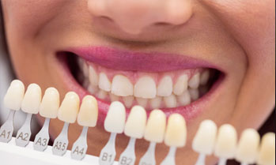
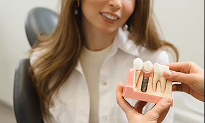
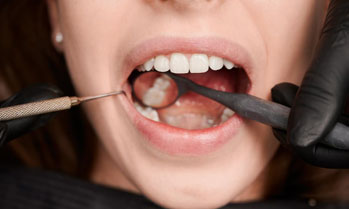
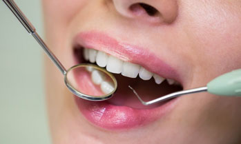
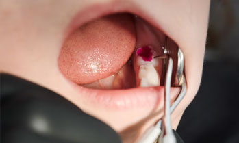
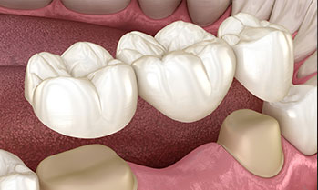
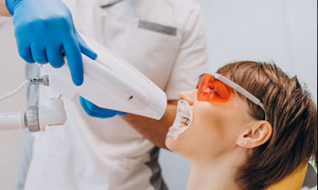
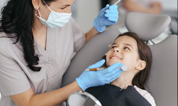
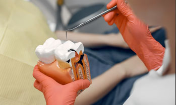
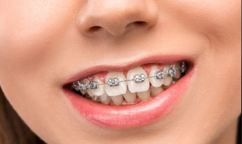

Veneers
We use veneers to permanently change the shape and color of your teeth. Our practice specializes in natural-looking veneers which transform your smile in a matter of weeks. They are thin pieces of tooth-coloured porcelain or resin-composite can be sticked on the front part of your teeth.
Invisalign
Invisalign is a teeth straightening treatment that uses a series of invisible aligners that slowly change the alignment of your teeth.

Dental Implants
Implants are a modern solution for replacing missing teeth, and can be used to replace a single tooth, several teeth, or all of the teeth. They are predictable and natural-looking, and, when properly cared for, can last your your entire life.

Filling
A filling is a way to restore a tooth damaged by decay back to its normal function and shape. When a dentist gives you a filling, he or she first removes the decayed tooth material, cleans the affected area, and then fills the cleaned out cavity with a filling material.

Scaling
Scaling is a dental process that involves removing the calculus deposits or stains on the teeth. We specialize in modern cleanings using ultrasonic cleaning technologies. This is a more gentle and effective way to remove calculus and stains compared to traditional dental picks.

Root Canal Treatment
Root canal treatment is a procedure done to save your tooth and prevent it from extraction when your tooth gets infected as a result of tooth decay or injury

Crown & Bridges
Crown is a 'cap' or cover placed on top of a tooth to restore its natural shape and function. It is also placed to protect a weakened tooth from damage. Bridges are artificial teeth that are fixed to your teeth to replace one or more missing teeth.

Whitening
We provide dentist-guided whitening right here in the SEPA DENTAL. With this hands-on approach, our dentists can use more concentrated whitening agents compared to over-the-counter products. That means whiter teeth in less time. Additionally, we offer options for custom whitening trays you can use at home. For most patients, the combination of a professional in-office treatment followed up with touch-up whitening sessions at home creates the whitest, brightest smiles

Oral Care For Children
We love seeing children. We're able to provide care for your entire family all under one roof, and we offer specialized services for children under the age of 17. For more complex issues, we work closely with a handpicked group of pediatric specialists who we'll help you coordinate with.

Wisdom Tooth Removal
Wisdom tooth extraction is a procedure to remove one or more wisdom teeth the four permanent adult teeth located at the back corners of your mouth on the top and bottom.

Braces
Dental braces, also known as orthodontic braces, are dental devices that are use to straighten or improve teeth alignment. They can be recommended for patients with crooked and overcrowded teeth, as well as under and overbite. Dental braces improve patients' facial appearance and make proper oral maintenance easier and more effective. Therefore, they can help patients maintain good dental health in the long run.